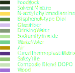
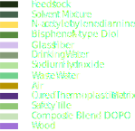

Technical Deep Dive
Material & Process Overview
Our process uses hydrogen peroxide (H₂O₂) as a strong oxidizing agent and acetic acid (CH₃COOH) as a mild acid and solvent. Together, they form peracetic acid in situ, which decomposes under microwave heating to generate reactive radicals that efficiently break down the epoxy network in composite waste, preserving glass fibers for reuse.
Sankey Diagram
Material Flow Analysis
 

Sankey Diagram Explanation
This Sankey diagram visualizes the mass balance in the facility under steady-state and full glass fiber recovery assumptions. Input: 4438 tonnes/year of shredded composite blade waste. Outputs: 4745 tonnes/year of photoluminescent safety tiles (primary), with recovered glass fibers, recycled solvents (H₂O₂/CH₃COOH recovery >90%), and minimal waste.
ChemCAD simulations confirm near-complete degradation at φ=0.71 and 3-hour residence time.
Reactor Design
Our solvolysis reactors operate at 90°C under atmospheric pressure with a 3-hour residence time. Integrated agitators ensure uniform processing and prevent matrix sticking, optimizing efficiency.
ChemCAD Simulation
ChemCAD Simulation
ChemCAD Analysis
ChemCAD simulations model the semi-batch solvolysis reactors, validating pseudo-first-order kinetics for epoxy degradation. At φ=0.71 and 3-hour residence time, nearly complete degradation is achieved.
Process Flow Diagram (PFD)
Process Flow Diagram (PFD)

Process Flow Diagram (PFD)
The updated PFD illustrates the comprehensive flow: Blade waste is shredded and separated, mixed with solvents (H₂O₂/CH₃COOH/H₂O), processed in four solvolysis reactors, followed by filtration, washing, drying, curing, and molding.
Plant Location
Plant Location

Plant Location
Our proposed facility in Wilhelmshaven, Germany, is strategically located for efficient logistics and access to wind turbine waste streams.